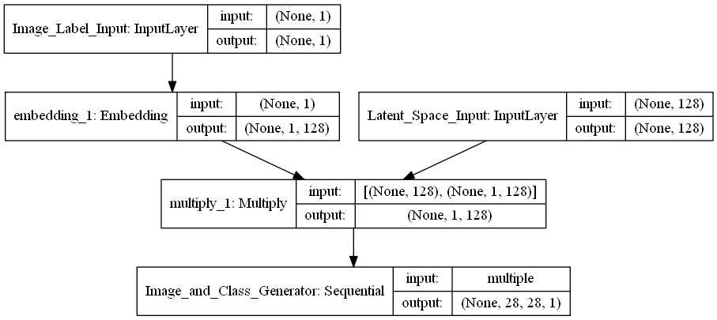
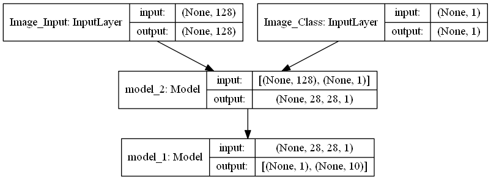

Visualizing Model Structure
Occasionally, you might find yourself toying with a keras application that’s sufficiently complicated to merit graduating from the vanilla, Sequential() API to doing things functionally. While the expressiveness that this allows is immediately desirable for the sake of creativity, keeping a mental model of the model flow in your head becomes increasingly tedious. More to the point, the neat, vertical printout of model.summary() will likely do an insufficient job at relating the branching architecture you’ve created.
Thankfully, keras neatly employs the graphviz library to address just that.
A Sample Model
For the sake of example, we’re going to leverage some helper code I found on the Internet to build an Auxiliary GAN where the Discriminator is trying to simultaneously predict Real/Fake as well as which MNIST class an image comes from.
Implementation details are unimportant here– I just wanted a Network sufficiently complicated to show the handiness of visualization.
from helpers import build_discriminator, build_generator
from keras.optimizers import Adam
from keras.layers import Input
from keras.models import ModelUsing TensorFlow backend.
And so we start off by building out the discriminator– the losses here are for Real/Fake and Correct Class, respectively.
You may notice that printing discriminator.summary(), the last two rows are informed by the 0th element of the 1th element of Conv_Block… Whatever that means.
discriminator = build_discriminator()
discriminator.compile(
optimizer=Adam(),
loss=['binary_crossentropy', 'sparse_categorical_crossentropy']
)
discriminator.summary()__________________________________________________________________________________________________
Layer (type) Output Shape Param # Connected to
==================================================================================================
Image_Input (InputLayer) (None, 28, 28, 1) 0
__________________________________________________________________________________________________
Conv_Block (Sequential) (None, 12544) 387840 Image_Input[0][0]
__________________________________________________________________________________________________
generation (Dense) (None, 1) 12545 Conv_Block[1][0]
__________________________________________________________________________________________________
auxiliary (Dense) (None, 10) 125450 Conv_Block[1][0]
==================================================================================================
Total params: 525,835
Trainable params: 525,835
Non-trainable params: 0
__________________________________________________________________________________________________
Plotting Them
However, looking at a plot of the model, this is simply where the model forks.
Couple things to note here:
- This
Conv_Blockis actually about a dozen lines ofConv2D,LeakyReLU, andDropoutstacked atop one another, but the visualization abstracts all of that away - Filling in the
name=parameter during layer instantiation goes a long way for clarity of your graphic
from keras.utils import plot_model
from keras.preprocessing import image
plot_model(discriminator, to_file='discriminator.png', show_shapes=True)
image.load_img('discriminator.png')
Continued
For completeness, we’ll look at the other portions that make up the GAN.
Being able to track the data dimensions between the images (Fake or Real) as well as class, and how they carry through the Generator was enormously helpful for me to understanding the construction of the Network as a whole.
latent_size = 128
generator = build_generator(latent_size)plot_model(generator, to_file='generator.png', show_shapes=True)
image.load_img('generator.png')
Similarly to how Conv_Block abstracts away all of the intermediate information, all you need to know about the overall structure of the combined Model that represents the whole GAN is that:
- It takes an image input and a class input
- It does some stuff
- The output of the final layer will be a True/False prediction and a Class prediction, chosen from 10
latent = Input(shape=(latent_size,), name='Image_Input')
image_class = Input(shape=(1,), dtype='int32', name='Image_Class')
fake = generator([latent, image_class])
discriminator.trainable = False
fake, aux = discriminator(fake)
combined = Model([latent, image_class], [fake, aux])
combined.compile(
optimizer=Adam(),
loss=['binary_crossentropy', 'sparse_categorical_crossentropy']
)
combined.summary()__________________________________________________________________________________________________
Layer (type) Output Shape Param # Connected to
==================================================================================================
Image_Input (InputLayer) (None, 128) 0
__________________________________________________________________________________________________
Image_Class (InputLayer) (None, 1) 0
__________________________________________________________________________________________________
model_2 (Model) (None, 28, 28, 1) 2754945 Image_Input[0][0]
Image_Class[0][0]
__________________________________________________________________________________________________
model_1 (Model) [(None, 1), (None, 1 525835 model_2[1][0]
==================================================================================================
Total params: 3,280,780
Trainable params: 2,754,369
Non-trainable params: 526,411
__________________________________________________________________________________________________
plot_model(combined, to_file='combined.png', show_shapes=True)
image.load_img('combined.png')
Ez pz